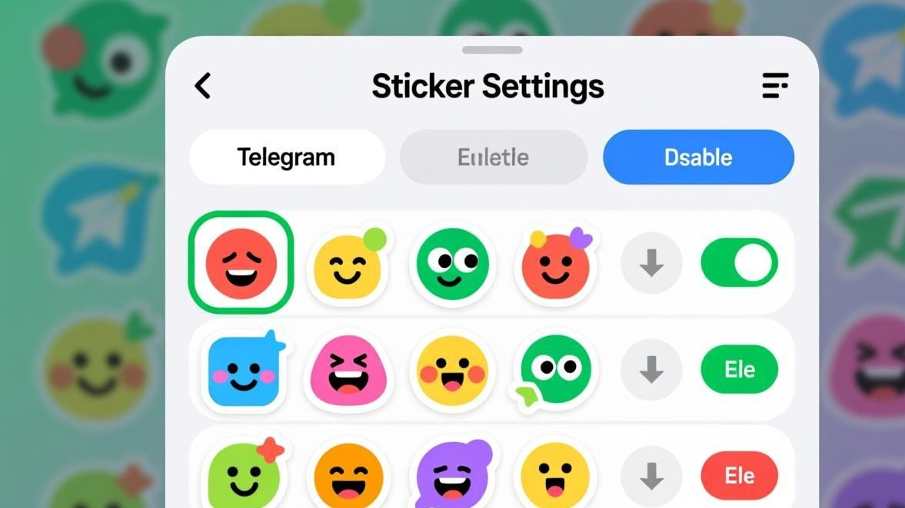

前天跟朋友聊天，正准备发个搞怪贴纸怼回去，结果点了贴纸按钮一看——好家伙，所有贴纸都变成了灰色方块，有的干脆显示个撕裂的图标。动画贴纸更惨，点开就转圈，转了半天啥也没出来。
说实话这种情况我也不是第一次遇到了。之前用Telegram跟国外客户对接的时候，他们的贴纸我经常看不到，还以为是网络问题，后来发现事情没那么简单。

先搞清楚是哪种「不显示」
在开始折腾之前，得先搞清楚你的贴纸是哪种情况不显示，因为不同情况的解决方法不太一样：
第一种：贴纸变成灰色方块或者裂图图标。这种一般是贴纸文件本身没下载下来，或者缓存出了问题。
第二种：动画贴纸（就是那些会动的）点开就转圈，一直加载不出来。这个通常跟视频GIF加载失败有点像，都是动画资源加载的问题。
第三种：整个贴纸包都消失了，在贴纸面板里找不到。这种情况可能是贴纸包被移除或者需要重新添加。
第四种：贴纸能显示但是很模糊，像打了马赛克一样。这个是贴纸质量设置的问题。
方法一：清理贴纸缓存（最简单先试这个）
大部分贴纸不显示的问题，其实就是缓存垃圾太多了。Telegram的贴纸缓存说白了就是把你用过的贴纸存在手机里，下次用就不用重新下载。但有时候这些缓存文件会损坏，或者堆积太多导致读取出错。
步骤 1
打开Telegram，点右上角的三道杠（Android）或者设置（iOS）
步骤 2
找到「设置」>「数据和存储」>「存储使用量」
步骤 3
点「清除缓存」，注意别点成「清除全部缓存」（那个会把聊天记录里的图片视频也清掉）
步骤 4
在缓存类型里，找到「贴纸」这一项，单独勾选它
步骤 5
点清除，然后重启Telegram
清完缓存之后，回到聊天界面，点一下贴纸按钮。这时候贴纸会重新从服务器下载，可能需要等个几秒钟，耐心点。
如果清缓存之后还是不行，那就试试下面的方法。
方法二：重新添加贴纸包
有时候贴纸包本身出了问题，需要重新添加。我之前遇到过一次，一个常用的表情包突然全部变成方块，清缓存也没用，最后发现是贴纸包的索引文件坏了。
解决方法是这样的：
步骤 1
在聊天界面点贴纸按钮，然后点右上角的「+」号或者「添加贴纸」
步骤 2
找到你之前用过的贴纸包，点右边的删除按钮（通常是个叉或者垃圾桶图标）
步骤 4
找到之后点「Add to Telegram」，重新添加到你的贴纸面板
步骤 5
回到聊天界面，看看贴纸是不是正常显示了
小贴士：
如果你不记得贴纸包的名字，可以在聊天记录里找之前用过的贴纸，长按那个贴纸，点「查看贴纸包」，就能找到贴纸包的来源了。
方法三：检查动画贴纸的设置
动画贴纸（Animated Stickers）是Telegram后来加的功能，有些老版本或者说某些定制版Telegram可能支持不太好。
如果你发现只有动画贴纸不显示，静态贴纸没问题，那可以试试这个：
打开设置 > 数据和存储 > 自动下载媒体，看看「动画贴纸」这个选项是不是被关掉了。如果被关掉了，动画贴纸就不会自动下载，点开就会转圈。
另外，如果你用的是比较老的手机（比如5年前的机型），动画贴纸可能会因为性能问题加载不出来。这种情况没啥好办法，要么升级手机，要么就用静态贴纸凑合吧。
方法四：换个DNS试试
这个方法听起来有点玄学，但确实有用。Telegram的贴纸服务器在国外，有时候DNS解析出问题会导致贴纸加载失败。
Android用户可以在WiFi设置里改DNS，推荐用Google的8.8.8.8或者Cloudflare的1.1.1.1。iOS用户可以用「配置DNS」这个功能，添加上面的DNS地址。
改完DNS之后，记得把Telegram完全关闭（从后台划掉），然后重新打开。
如果觉得改DNS麻烦，也可以试试开一下VPN或者代理，看看贴纸能不能加载出来。如果开代理之后贴纸正常了，那就说明确实是网络问题。
方法五：重装Telegram（终极大法）
如果上面这些方法都没用，那就只能使出终极大法了——卸载重装。
不过在卸载之前，一定要先做好备份！Telegram虽然有多端同步，但是有一些本地设置和数据是不会同步的。
重装的步骤：
1. 先截图保存你的贴纸包列表（方便重装之后重新添加） 2. 如果你有重要的聊天记录没有开启云同步，记得先导出 3. 卸载Telegram 4. 去应用商店重新下载安装 5. 登录你的账号 6. 重新添加贴纸包
重装之后，贴纸不显示的问题基本上都能解决。因为重装会清空所有的本地缓存和配置文件，相当于给Telegram做了一次「大扫除」。
注意事项：
重装Telegram不会删除你的聊天记录，因为聊天记录是存在Telegram的服务器上的。但是本地的一些设置（比如通知设置、主题设置）会恢复成默认值，需要重新配置。
关于贴纸包的那些事
顺便说一下贴纸包的管理。Telegram的贴纸包是用户自己创建的，有些贴纸包可能因为作者删除了或者违规被封，就会导致贴纸无法显示。
如果你发现某个贴纸包突然全部变成方块，而且重新添加也没用，那很可能是这个贴纸包已经被删除了。这种时候只能去找类似的替代贴纸包了。
另外，媒体加载优化分类里还有不少关于Telegram媒体文件的优化技巧，有需要的可以去看看。
常见问题
常见问题
贴纸不显示的问题说大不大，说小不小，但确实挺影响聊天体验的。特别是跟朋友聊得正嗨的时候，想发个贴纸怼回去结果贴纸变成方块，那种感觉真的挺尴尬的。
上面这些方法基本上能覆盖大部分贴纸不显示的情况。如果你试了所有方法还是不行，那可能是Telegram的服务器问题，这种时候只能等官方修复了。不过这种情况比较少见，大部分时候都是上面这几个方法能搞定的。
对了，如果你还遇到了其他Telegram媒体相关的问题，比如视频GIF加载不出来，也可以看看我们其他的相关教程，说不定能找到答案。
📱 立即下载 Telegram 最新版
更新到最新版本可修复大部分图片加载问题，官方正版安全无捆绑。